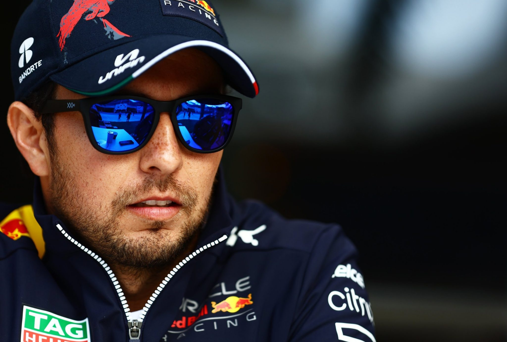

| Team | Red Bull Racing |
|---|---|
| Country | Mexico |
| Podiums | 25 |
| Points | 1176 |
| Grand Prix entered | 234 |
| World Championships | N/A |
| Highest race finish | 1 (x4) |
| Highest grid position | 1 |
| Date of birth | 26/01/1990 |
| Place of birth | Guadalajara, Mexico |
Biography
He’s the fighter with a gentle touch from the land of the Lucha Libre.
Perez’s reputation in F1 has been built on opposite approaches to Grand Prix racing.
On the one hand, he is a punchy combatant who wrestles his way through the pack and into the points.
Never afraid to add a bit of spice to his on-track encounters, even his team mates don’t always escape the Mexican’s heat.
Then on the other hand, Perez is a smooth operator, a master at managing tyres to eke out extra performance
and give him the upper hand on strategy. A firm favourite on the grid after his time with Sauber, McLaren, Force India and Racing Point,
Perez has matured into an analytical racer and team player.
A proud countryman, the Guadalajara gunslinger has amassed more points than any other Mexican in the history of F1.
n Sakhir 2020 he also matched hero and compatriot Pedro Rodriguez by taking the chequered flag in first
a performance that landed him a seat with title contenders Red Bull.
There he provided strong support to Max Verstappen’s 2021 championship-winning campaign
also adding another victory to his own tally. More wins may not be assured,
especially with Verstappen as team mate, but Perez working hard and racing with his heart are.
Gallery
